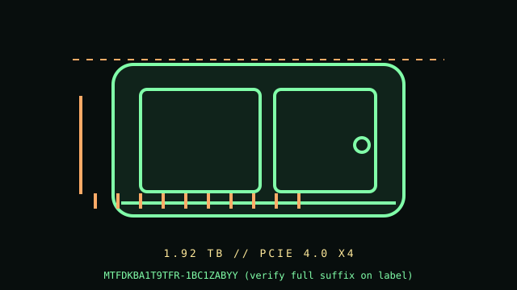

[ PCIE 4.0 NVME DRIVES // IDENTIFIED PRODUCT ]
Micron 7450 PRO 1.92 TB U.3 (MTFDKBA1T9TFR-1BC1ZABYY)
1.92 TB 2.5-inch U.3, 15 mm class (enterprise form factor); PCIe 4.0 NVMe SSD. Cataloged by the complete manufacturer part number below; performance figures are vendor-rated, not independent test results.

IDENTIFICATION: Verify the complete MPN, suffix, serial/date code, hardware revision and firmware against the product label. Capacity variants, factory heatsinks and regional SKUs may differ; the link and rated data below apply only to the specified configuration where the manufacturer identifies it.
Manufacturer-identified specifications
| Product / MPN | Micron 7450 PRO 1.92 TB U.3 (MTFDKBA1T9TFR-1BC1ZABYY) — MTFDKBA1T9TFR-1BC1ZABYY (verify full suffix on label) |
|---|---|
| Capacity / form factor | 1.92 TB; 2.5-inch U.3, 15 mm class (enterprise form factor). |
| Interface / lane width | PCIe 4.0 x4 over U.3. |
| Protocol | NVMe (7450 family). |
| Rated performance / endurance | Manufacturer family data sheet lists up to 6,800 MB/s sequential read for 7450 PRO; write and endurance depend on exact capacity/form factor, so not repeated here without matching the full part-code line. |
| Model era | 2021 product generation; check manufacturer lifecycle/support notice. |
| Heatsink / revision | Enterprise 2.5-inch U.3 drive; it is not SATA/SAS despite 2.5-inch appearance. Cooling and carrier airflow are platform-specific. |
Compatibility, installation & service
- This is a data-center U.3 NVMe model; a 2.5-inch SATA bay or ordinary U.2 backplane is not sufficient unless the backplane/controller explicitly supports U.3/NVMe signaling and power pinout. The full Micron suffix differentiates configuration; verify label and latest data sheet. NVMe boot depends on server UEFI, backplane, and platform qualification.
- Before insertion, confirm the server service manual and backplane specify U.3 NVMe support, PCIe lane wiring, carrier/drive height, hot-plug capability, power, and approved firmware. Use only qualified carrier and airflow; do not hot-remove unless the platform explicitly supports it and the OS has unmounted/drained the device. In service, record model/serial/firmware, SMART/NVMe health and host logs, protect data, and follow the array/controller rebuild procedure; never substitute SATA/SAS assumptions for NVMe.
- Do not hot-plug an M.2 module unless the server/platform manual explicitly documents hot-plug support. Shut down cleanly, disconnect standby power when instructed, and use electrostatic-discharge precautions during handling.
- Before replacing a boot drive, verify a recoverable backup, OS recovery media, encryption keys, firmware settings and the target system’s boot mode; physical fit does not establish compatibility.
Manufacturer references
- Micron 7450 SSD family — manufacturer specifications and data-sheet downloadsOfficial manufacturer product/specification reference; use the exact MPN on the drive label and its linked specification/downloads for revisions, capacity ratings, fit and warranty limits.
- NVM Express — specifications and technical documentationStandards reference for NVMe; it does not establish this product’s SKU-specific implementation.
Manufacturer ratings are model/capacity-specific and measured under stated vendor conditions; they are not guarantees of sustained speed in every host. Confirm current datasheet/manual, support status and warranty in the manufacturer’s regional support portal before deployment.